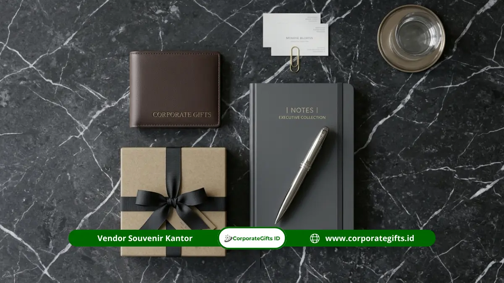

Corporate Gifts ID - Gift set executive adalah paket hadiah eksklusif berisi beberapa barang berkualitas tinggi dalam satu kemasan premium, dirancang khusus untuk klien VIP, mitra strategis, dan tamu penting perusahaan. Dalam dinamika hubungan bisnis modern, cinderamata tidak lagi sekadar tanda mata seremonial, melainkan representasi langsung dari reputasi, apresiasi tulus, serta standar keunggulan korporat.
Gift set executive berfungsi sebagai simbol penghargaan prestisius sekaligus media branding yang sangat elegan. Paket ini umumnya memadukan perlengkapan kerja fungsional, aksesori kulit asli, smart gadget, maupun minuman gourmet pilihan dengan identitas visual perusahaan yang diaplikasikan secara rapi. Perusahaan yang memberikannya secara tegas menunjukkan perhatian mendalam terhadap detail dan kualitas hubungan bisnis, sehingga kesan profesional tertanam jauh lebih lama dan berbobot dibandingkan pembagian souvenir massal.
Poin Kunci Gift Set Executive:
- Definisi Paket: Kumpulan produk korporat premium terkurasi dalam satu kesatuan kemasan mewah dan eksklusif.
- Target Penerima: Dikhususkan bagi jajaran direksi, klien bernilai kontrak strategis, mitra usaha utama, dan tamu kehormatan.
- Fokus Nilai: Terletak pada keunggulan material (logam, kulit, kayu), estetika kotak luar, serta presisi teknik cetak logo.
- Perencanaan Matang: Pemesanan optimal diawali dari pemetaan tujuan relasi, profil penerima, batasan anggaran, dan jadwal serah terima.
- Kepatuhan Etika: Wajib menyelaraskan pemberian dengan regulasi gratifikasi kedinasan serta kebijakan kepatuhan internal perusahaan.
Apa Itu Gift Set Executive dan Siapa yang Cocok Menerimanya-
Gift set executive adalah kumpulan produk premium yang disusun secara harmonis dalam satu kemasan terpadu dan ditujukan khusus bagi penerima setingkat pimpinan, klien utama, atau rekanan bisnis strategis perusahaan. Berbeda mendasar dengan souvenir promosi yang dibagikan dalam volume ratusan hingga ribuan unit, paket eksekutif ini disiapkan secara terbatas dengan selektivitas tinggi.
Setiap elemen di dalam paket dirancang agar saling melengkapi fungsi hariannya di meja kerja maupun saat mobilitas bisnis. Contoh kombinasi terpopuler mencakup pena logam berbobot mantap, notebook bersampul kulit, tempat kartu nama (card holder), dan tumbler vakum berinsulasi suhu. Kemasannya pun dirancang istimewa menggunakan kotak kayu berpernis halus, rigid box berpintu magnetik, atau kotak beludru berbingkai rapi.
Penerima yang paling tepat mendapatkan paket eksklusif ini antara lain dewan direksi perusahaan rekanan, klien dengan kontrak kerja jangka panjang, pejabat instansi dalam forum resmi, narasumber simposium internasional, serta pelanggan korporat yang loyal. Selain untuk pihak eksternal, gift set executive juga sangat ideal dimanfaatkan sebagai paket penyambutan (welcome kit) pimpinan baru atau penghargaan bagi karyawan dengan capaian prestasi luar biasa.
Mengapa Perusahaan Memilih Gift Set Executive untuk Klien Penting-
Banyak korporasi papan atas memprioritaskan gift set executive karena hadiah premium mampu meninggalkan kesan personal yang mendalam, tidak mudah dilupakan, dan secara instan mencerminkan standar kredibilitas perusahaan pemberi di mata para pemangku kepentingan.
Berdasarkan riset global dari Advertising Specialty Institute (ASI) dalam laporan Global Advertising Specialties Impact Study, sekitar 83 persen penerima menyukai cinderamata promosi yang bermanfaat nyata, dan sebanyak 85 persen dari mereka memiliki kecenderungan lebih tinggi untuk terus menjalin transaksi bisnis dengan pihak pemberi hadiah. Data ini mempertegas fakta bahwa pengadaan cinderamata eksekutif bukanlah sekadar pos pengeluaran seremonial, melainkan investasi strategis dalam memelihara loyalitas kemitraan (retensi klien B2B).
Keunggulan lain terletak pada siklus pemakaian produk yang sangat panjang. Pena logam, buku agenda kulit, atau tumbler tahan karat yang digunakan setiap hari akan menempatkan logo perusahaan Anda senantiasa terlihat di meja kerja eksekutif. Dalam lanskap B2B, paparan merek (brand exposure) yang berulang dan berkelas secara otomatis menjaga nama perusahaan Anda tetap menjadi pilihan utama saat mitra merencanakan keputusan bisnis berikutnya.

Kombinasi isi gift set executive berupa pena logam berukir, notebook kulit, dan tumbler berinsulasi.
Apa Saja Isi Gift Set Executive yang Layak Dipesan-
Komposisi isi gift set executive yang bermutu tinggi melibatkan kurasi barang-barang esensial yang memadukan fungsi produktivitas, estetika modern, dan ketahanan bahan:
1. Perlengkapan Tulis dan Notebook
Pena logam bertinta gel halus dan notebook bersampul kulit sintetis premium (PU leather) atau kulit sapi asli merupakan pilar klasik yang tidak pernah lekang oleh waktu. Para eksekutif rutin menggunakannya dalam penandatanganan memorandum kerja sama atau rapat direksi, sehingga logo perusahaan Anda tampil bermartabat di hadapan publik profesional.
2. Aksesori Kulit Eksklusif
Tempat kartu nama (card holder), pouch dokumen, dompet paspor, hingga gantungan kunci kulit memberi sentuhan kemewahan personal. Penambahan teknik emboss logo tanpa warna pada permukaan kulit menciptakan tampilan yang tenang (subtle), anggun, dan tidak terkesan mencolok.
3. Drinkware dan Perlengkapan Minum
Tumbler stainless steel berteknologi dinding ganda hampa udara (double-wall vacuum insulation) sangat disukai eksekutif dengan mobilitas tinggi. Wadah minum ini sanggup menjaga suhu kopi panas atau air dingin hingga belasan jam, serta tampak sangat memikat saat dipadukan dengan teknik laser engraving logo yang presisi.
4. Gadget dan Aksesori Kerja Cerdas
Power bank berbalut bodi aluminium ramping, pengisi daya nirkabel (wireless charging pad), hingga flashdisk kartu logam berkecepatan tinggi memenuhi kebutuhan harian profesional modern. Pastikan seluruh perangkat elektronik telah lolos uji sertifikasi keamanan arus daya.
5. Produk Konsumsi Gourmet Premium
Biji kopi spesialti single origin nusantara, daun teh artisan premium, atau cokelat artisan dapat disertakan untuk mentransformasi gift set menjadi hampers perayaan yang hangat. Pastikan tanggal kedaluwarsa masih panjang dan memiliki legalitas sertifikasi halal resmi.
Bagaimana Cara Memesan Gift Set Executive Custom untuk Perusahaan-
Proses pemesanan gift set executive yang tertata rapi akan menghindarkan tim pengadaan dari kendala tenggat waktu dan ketidaksesuaian hasil cetak. Berikut langkah-langkah praktisnya:
- Tentukan Momen dan Tujuan: Rumuskan apakah bingkisan diperuntukkan bagi perayaan ulang tahun korporasi, selebrasi penutupan kontrak merger, apresiasi akhir tahun, atau cenderamata rapat umum pemegang saham (RUPS).
- Petakan Profil Penerima: Ketahui jabatan, preferensi gaya, serta latar belakang industri penerima agar pilihan isi paket terasa sangat personal dan relevan.
- Alokasikan Anggaran per Paket: Menetapkan plafon biaya sejak awal memudahkan vendor merumuskan kombinasi produk dan material kotak yang paling proporsional.
- Siapkan Format Logo Vektor: Gunakan file desain master berformat AI, EPS, PDF, atau SVG beresolusi tinggi agar hasil grafir dan emboss tampak tajam tanpa pecah.
- Persetujuan Sampel Fisik atau Mockup 3D: Pastikan Anda memeriksa dummy produk atau mockup digital untuk memverifikasi tata letak logo dan warna kemasan sebelum instruksi produksi massal diberikan.
- Jadwalkan Waktu Distribusi: Atur tanggal penyelesaian setidaknya 5 hingga 7 hari sebelum acara serah terima guna mengantisipasi durasi pengiriman ekspedisi logistik.
Semakin awal brief konsep diserahkan kepada tim kami di CorporateGifts.ID, semakin leluasa opsi personalisasi kemasan dan pengujian bahan yang dapat diwujudkan untuk perusahaan Anda.
Faktor Apa yang Menentukan Kualitas Gift Set Executive-
Mutu dari paket hadiah eksekutif tidak semata ditentukan oleh mahalnya harga barang, melainkan ditentukan oleh lima faktor fundamental berikut:
- Kualitas Material Dasar: Bobot logam yang mantap, aroma kulit asli yang khas, serat kayu alami, serta kejernihan kaca memberikan sensasi kemewahan tak terbantahkan saat pertama kali disentuh oleh tangan penerima.
- Presisi Personalisasi Logo: Kedalaman grafir laser yang konsisten, tepian emboss yang tegas, serta warna foil hot stamping yang menempel sempurna mencerminkan kontrol mutu manufaktur yang ketat.
- Struktur dan Interior Kemasan: Kotak luaran harus tebal dan kokoh, dilengkapi dudukan busa cetak (custom EVA foam die-cut) berlapis beludru atau satin agar produk tersusun rapi dan terlindung dari benturan selama proses transportasi.
- Harmoni Visual dan Tema: Pilihan warna antara kotak luar, pita, buku agenda, pulpen, dan tumbler harus selaras dalam satu palet warna korporat yang anggun.
- Konsistensi Unit: Setiap paket yang keluar dari jalur perakitan harus memiliki standar keseragaman yang identik tanpa cacat produksi.
Apa Bedanya Gift Set Executive dengan Souvenir Kantor Biasa-
Memahami perbedaan antara paket eksekutif dan cenderamata massal sangat penting agar strategi promosi tepat sasaran:
| Aspek Perbandingan | Gift Set Executive | Souvenir Kantor Biasa |
|---|---|---|
| Target Penerima | Klien VIP, dewan direksi, mitra strategis, tamu kehormatan | Peserta seminar umum, massa pameran, audiens festival |
| Komposisi Isi | Beberapa produk premium terpadu (pena, agenda kulit, tumbler, gadget) | Satu produk tunggal fungsional (pulpen plastik, gantungan kunci) |
| Kemasan Luar | Hardbox magnetik berlapis beludru, wooden box pernis mewah | Plastik OPP bening, kantong spunbond, atau pouch kertas polos |
| Teknik Personalisasi | Laser engraving, blind deboss, hot stamping foil emas/perak | Sablon cat satu warna atau digital print standar |
| Tujuan Strategis | Membangun loyalitas hubungan B2B jangka panjang dan retensi mitra | Meningkatkan kesadaran merek (awareness) massal dalam jangkauan luas |
Apa Kesalahan Umum Saat Memesan Gift Set Executive-
Berdasarkan pengalaman kami mendampingi ratusan divisi pengadaan korporat, berikut beberapa kekeliruan yang wajib dihindari:
- Waktu Pemesanan Terlalu Mepet: Proses pembuatan hardbox custom, pencetakan busa presisi, dan uji grafir membutuhkan waktu pengerjaan yang cermat. Pemesanan mendadak berisiko membatasi pilihan material terbaik.
- Resolusi Logo Tidak Memadai: Mengirim logo berupa tangkapan layar beresolusi rendah akan menghasilkan ukiran laser bergerigi pada permukaan logam atau kulit.
- Terlalu Banyak Menjejali Barang: Menumpuk terlalu banyak barang berbeda gaya di dalam satu kotak justru menghilangkan kesan eksklusif dan membuat paket terlihat berantakan.
- Mengabaikan Preferensi Klien: Menghadiahkan makanan tanpa verifikasi kehalalan atau preferensi diet penerima berpotensi menimbulkan ketidaknyamanan etika.
- Menghilangkan Kartu Ucapan Personal: Hadiah semewah apa pun akan terasa hambar layaknya transaksi formalitas biasa tanpa adanya kartu ucapan bertanda tangan manajemen.
Bagaimana Tips Menyusun Gift Set Executive yang Berkesan-
Untuk memastikan hadiah korporat Anda memukau sejak pandangan pertama, terapkan formula kurasi berikut:
Pilihlah palet warna yang terbatas dan selaras, misalnya hitam pekat dengan sentuhan aksen emas matte (matte gold), atau biru dongker berpadu logam perak mengilap. Konsistensi warna menciptakan kesan keanggunan yang kokoh. Prioritaskan barang-barang fungsional yang benar-benar dipakai di lingkungan kerja setiap hari, karena utilitas tinggi memperpanjang durasi ingatan klien terhadap merek Anda.
Selain itu, tempatkan logo secara proporsional di sudut barang tanpa ukuran berlebihan. Eksekutif senior lebih mengapresiasi desain yang tenang dan percaya diri (subtle luxury) ketimbang branding berukuran raksasa yang terkesan agresif.
Bagaimana Personalisasi Logo Memperkuat Citra Perusahaan-
Teknik personalisasi identitas korporat pada hadiah eksekutif berfungsi menjembatani produk manufaktur umum menjadi aset representasi reputasi bisnis. Pemilihan metode personalisasi harus disesuaikan secara presisi dengan karakteristik material:
- Laser Engraving: Sinar laser mengikis lapisan permukaan logam anodized atau kayu, memunculkan warna dasar material dengan ketajaman mikro yang tidak akan luntur atau terkelupas selamanya.
- Blind Deboss: Matras logam panas ditekan pada kulit sintetis atau kulit sapi, menciptakan cekungan logo berbayang alami yang sangat elegan.
- Hot Stamping Foil: Mentransfer lapisan foil metalik mengilap pada sampul buku agenda atau bagian penutup hardbox, memancarkan kemilau mewah saat terkena bias cahaya lampu ruangan.
Bagaimana Etika dan Aturan Memberi Gift Set Executive-
Dalam konteks kepatuhan tata kelola perusahaan yang baik (Good Corporate Governance), pemberian cinderamata kepada mitra bisnis harus dilandasi etika transparansi, kewajaran nilai, serta kepatuhan penuh terhadap regulasi anti-gratifikasi, terlebih jika melibatkan pejabat instansi pemerintah atau penyelenggara negara.
Komisi Pemberantasan Korupsi (KPK) telah menetapkan pedoman resmi terkait batasan gratifikasi yang dapat dipelajari melalui kanal resmi instansi terkait. Pemberian cinderamata yang sah umumnya berupa perlengkapan kantor atau cinderamata seremonial resmi berlogo perusahaan dalam batas nilai wajar, tanpa maksud mempengaruhi kebijakan kedinasan tertentu. Untuk kasus-kasus pengadaan bernilai besar, selalu konsultasikan rincian paket dengan divisi hukum atau unit kepatuhan (compliance) internal perusahaan Anda.
Kesimpulan
Gift set executive adalah strategi investasi relasi yang sangat efektif untuk mengekspresikan penghargaan tulus kepada klien penting dan mitra strategis, sekaligus mengukuhkan citra kredibilitas perusahaan Anda di level tertinggi. Kunci keberhasilan kurasi terletak pada keharmonisan isi paket, pemilihan bahan berstandar premium, presisi personalisasi logo, kemasan rigid box yang elegan, serta perencanaan waktu produksi yang disiplin.
Siap menghadirkan cenderamata berkelas yang memukau para pengambil keputusan di perusahaan mitra Anda- Konsultasikan konsep, pemilihan material, dan sampel desain bersama tim spesialis CorporateGifts.ID sekarang juga.